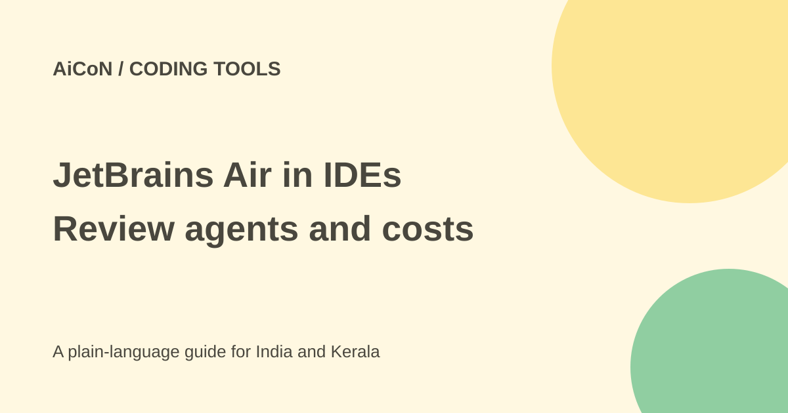

JetBrains Air in IDEs: agents, EAP and costs
JetBrains Air in IDEs is a workspace for running and reviewing coding agents. The plugin is not an AI provider and has no separate licence fee. The agents you use can still require accounts or subscriptions.

What does the plugin do?
Air helps you start coding agents, follow sessions and review changes. It can connect agents such as Codex, Gemini, Copilot, Claude Agent and Junie, with others through ACP. Agents keep their own provider settings and accounts.
Parallel sessions can be useful, but more sessions can also create more changes and model charges. Review the exact repository, branch and files before letting several agents work at once.
EAP setup can change
The October launch points to the Marketplace plugin or bundled 2026.3 EAP builds. The checked current IntelliJ documentation says compatibility starts with 2026.2 and describes a separate plugin. Follow the current instructions for your exact IDE build.
The launch says installing through an AI Assistant notification disables AI Assistant to avoid side-by-side operation. Current IntelliJ docs say Air does not replace or disable AI Assistant. These instructions conflict, so check the actual installed plugin state rather than assume one rule applies everywhere.
How to try a small coding task
- Read the current quickstart and verify your IDE version and plugin compatibility.
- Use a backed-up sample repository with a separate branch.
- Install the official Air plugin or enable the bundled version where your build provides it.
- Check whether AI Assistant remains enabled and review any installation notice.
- Connect one intended agent and inspect its login, permissions, data terms and billing.
- Try a small explanation or test-writing task before allowing broad edits.
- Review the diff, run tests and keep or revert the changes yourself.
- Inspect session costs and close unused agents before expanding parallel work.
Free or paid?
The plugin itself is free. JetBrains offers Junie Lite for a limited time after signing in with a JetBrains Account, with terms and models subject to change. Do not assume that means unlimited free use of every agent.
Third-party agents follow their own accounts and prices. The launch and current Air product FAQ say cloud runs require a JetBrains AI subscription. No single INR total applies to every setup; check account prices and any applicable IDE licence.
Who handles your code?
Current docs say the plugin itself has no access to code until agents are set up and authorised. The chosen agent or provider determines processing and privacy terms. Connecting a provider is a data decision, not just a cosmetic setting.
A Kerala student should use sample code first. A freelancer should check client rules before sending source to a hosted model. EAP software may have rough edges and frequent changes, so keep important projects backed up.
What changed since the original post?
We added current compatibility guidance and preserved the conflicting AI Assistant installation wording rather than choosing one silently. Free Junie Lite is qualified as limited-time, not a permanent all-agent entitlement. No plugin was installed.
Frequently asked questions
Does Air include every agent free?
No. Agents keep their own accounts and subscriptions.
Is JetBrains AI mandatory?
Not for every local agent, but the checked FAQ requires it for cloud runs.
Will AI Assistant always be disabled?
Official sources differ by setup wording. Check your actual build and plugin state.
Sources: Current IntelliJ documentation · Air quickstart · Air IDE product FAQ · EAP launch. Checked 7 October 2026.